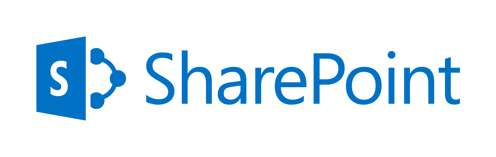
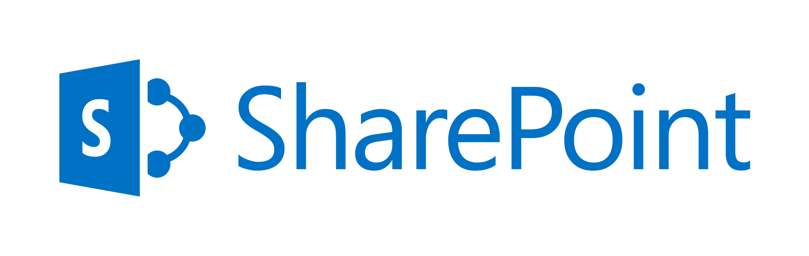

Firmas gráficas
Estampe sufirma gráfica desde el celular o computador y realice firmas rápidas y confiables.
Estampe sufirma gráfica desde el celular o computador y realice firmas rápidas y confiables.
Estampe su firma gráfica desde el celular o computador y realice firmas rápidas y confiables.
Estampe su firma gráfica desde el celular o computador y realice firmas rápidas y confiables.
La principal ventaja denuestro producto Intellisign® es que nadie quedará fuera de su flujo de firma,sea que un usuario(cliente,proveedor o empleado)use certificados digitales o no,siempre podrá acceder a firmar los documentos generados por usted o su equipo con otras clases de firmas electrónicas seguras,soportadas por nuestro sistema.
Con un par de clics,podrá configurar fácilmente quiénes serán las personas que firmarán un determinado documento electrónico. Determine el ordenen que las personas deban firmar los documentos o el mecanismo de firma con la que realizarán la suscripción(firma digital,firma gráfica o firma biométrica).
Los equipos que trabajan con Intellisign® adoran nuestra funcionalidad para realizar seguimientos y trazabilidad de los documentos que se han generado y han puesto a disposición de los firmantes. Así cada usuario o administrador podrá supervisar la hora,fecha e IP desde donde se firmó un documento.Incluso si un documento está retrasado parafirmar,un recordatorio periódico será enviado para ponerse al día.

Intellisign® también se ofrece como software como servicio(SaaS),por ello cuidamos que su navegación dentro de la plataforma sea segura(Cifrado de Punto a Punto con TLS1.2) y que el servicio nunca se interrumpa(anti ataques DDoS).Tanto las bases de datos,como los documentos electrónicos en Intellisign® se encuentran cifrados en ubicaciones diferentes e inaccesibles para empleados no autorizados,asegurando plena confidencialidad.Puede configurar políticas de destrucción y respaldo segura de documentos de manera periódica.
Próxima Certificación ISO/IEC 27001 de Seguridad de la Información.
Intellisign® es usado por decenas de empresas anivel nacional permitiendo la combinación de firmas digitales con firmas electrónicas gráficas y firmas biométricas,plenamente válido de acuerdo a la normativa vigente del Código Civil,el cual,en sus artículos 141(Manifestación de Voluntad),141-A(Formalidad)y 143(Libertad de Forma)que promueven el uso de medios electrónicos o análogos para llevar acaso éstas actividades.
Intellisign® es la única opción multiplataforma de firma electrónica avanzada que le provee:
 +
+
Firma electrónica (gráfica) de ambos lados
+
Firma electrónica (gráfica) y Firma Digital (certificado digital)
+
firma digital (certificado digital)de ambos lados

Single Server(Máx. 1 servidor)
Alta Disponibilidad(Min. 3 servidores)

 


Autenticación y Administración de Usuarios
Casilla Electrónica y Notificaciones
Flujos de trabajo y automatización
Formularios y gestión de datos
Módulo de firmas electrónicas gráficas
Módulo de firma digitales
Módulo de firmas biométricas faciales
Auditorías y estadísticas
Escríbanos a través del siguiente formulario y uno de nuestros ejecutivos especializados en Juntas Generales de Accionistas No Presenciales lo contactará.